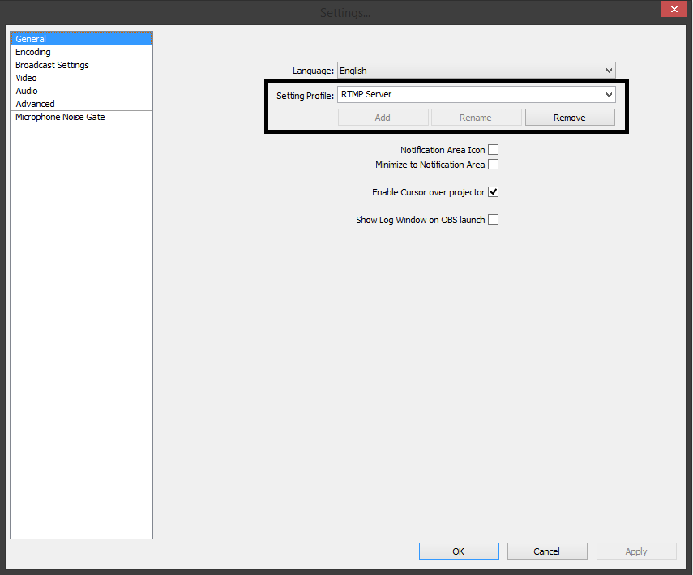
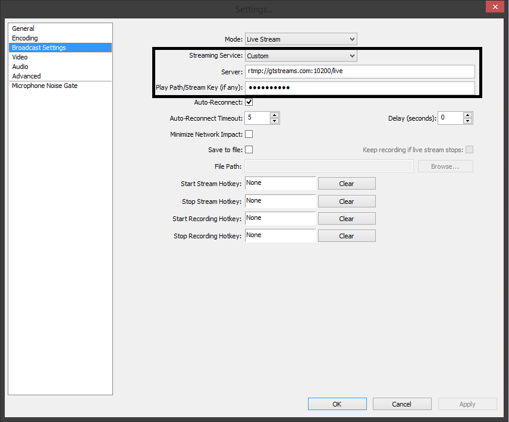

This guide assumes that you already have Open Broadcaster Software installed. There are plenty of guides out there for figuring out the best broadcast and encoding settings not specified here.
Type in a name for a new profile in OBS to preserve your current stream settings, and hit “Add.”
Next, head to “Broadcast Settings” on the left, and you should see the screen below.
Click the dropdown box next to “Streaming Service,” and choose “Custom.” For Server, put “rtmp://gtstreams.com:10200/live” without the quotes. Next, type the desired name of your stream in “Play Path/Stream Key (if any)”.
Due to the early development phase that the site is currently in, please refrain from using any special characters or spaces in the name of your stream.
That’s all! Hit “Apply” and you should start broadcasting. Within a few seconds, you should be able to see your stream on GTStreams under the stream list.